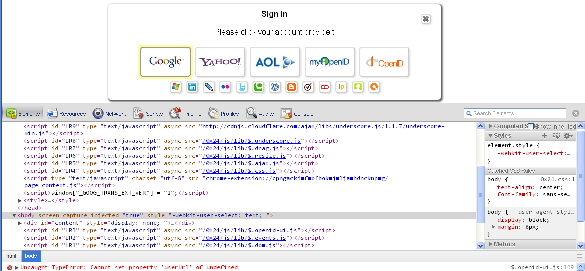
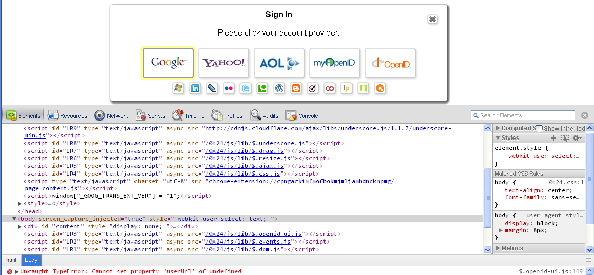

Loadrunner.js
Loadrunner gets points for most interesting creation of script tags. But, unfortunately that doesn't help. It also fails to execute modules in the correct order.

Loadrunner gets points for most interesting creation of script tags. But, unfortunately that doesn't help. It also fails to execute modules in the correct order.
